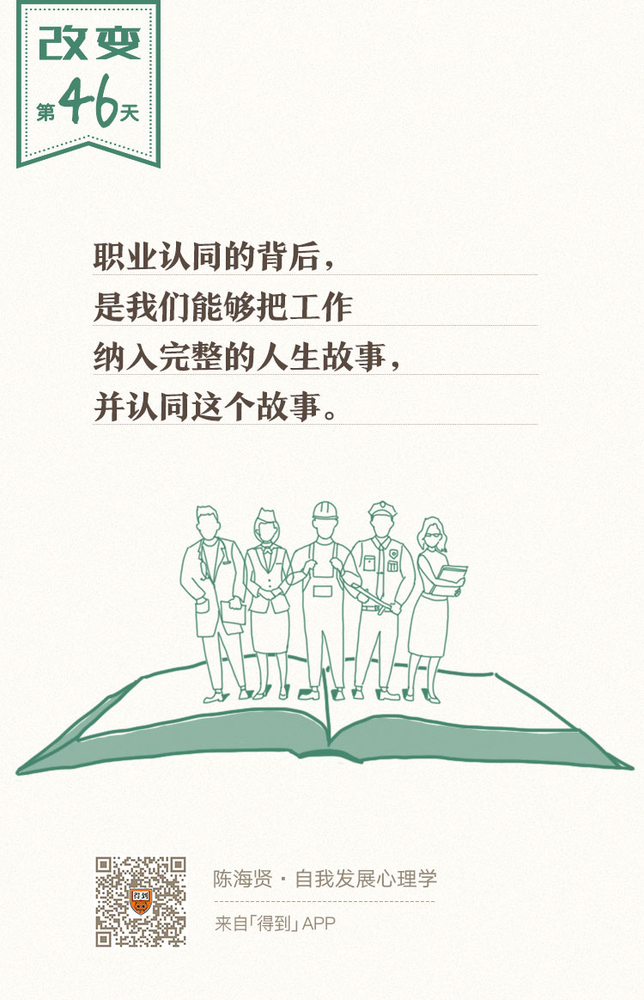

46丨成年早期使命（二）：如何建立职业认同？

欢迎来到《自我发展心理学》。
你好，我是陈海贤。
假如，你在青春期已经建立了稳定的身份认同，在成年早期已经建立起了一段稳定的亲密关系，几乎同时，另一个重要的人生课题又摆在你面前了，那就是怎么找一个适合自己的职业？怎么确立职业认同？
从某种意义上，确立职业认同与上节课讲的建立亲密关系的很像：工作的工资福利待遇这些工作中外在的东西，相当于爱人的颜值，而在你工作中的感受，相当于在你关系中感觉到的亲密感。
在亲密关系中，颜值高固然好，但真正关键的，是你们是否建立起了能够分享彼此的亲密感。
同样在工作中，真正让你觉得幸福的，是你是否认同你所做的事情。
寻找职业认同和寻找真爱的过程也很像，它的困难既包括我们怎么找合适的目标伴侣或者工作，也包括我们怎么克服对完美对象的幻想和对失去可能性的焦虑，做出自己的选择和承诺。
就像稳定的亲密关系会带来内心的安稳和平静，投入自己喜欢的职业，你也会让自己的心慢慢地沉下来，并逐渐获得一种自信和成就感。
经常有人问我：老师，我该干一行爱一行，还是爱一行干一行？就像有人会问我：“老师，我该找一个爱我的人结婚，还是找一个我爱的人结婚？”一样。
我觉得这个问题就像问：如果你要吃一条鱼，从头开始吃比较好吃呢，还是从尾巴开始吃比较好吃呢？
关键不在从哪里开始吃，而在这条鱼本身好不好吃。
无论怎么开始的恋爱，如果最终不能发展出两个人能够分享的亲密感，那就不会是好的爱情。
同样，如果干一行和爱一行之间一直有矛盾，除非我们能够以某种方式整合这种矛盾，发展出我们对职业的认同，否则，这个工作也不会让你快乐。
职业认同的四个标志
那么，建立起职业认同意味着什么呢？
它意味着，你能接受职业背后的人际关系，并把它当做你自我的一部分。职业的人际关系有两层含义。
第一层含义，它包括了我们和工作伙伴本身的关系。
比如，你愿意投入到一种协作关系中，你认同与你共事的人，你有这个行业的前辈作为榜样，并愿意接受他们的指导。
第二层含义，职业的人际关系还包括了我们与服务对象的关系。
有一种说法，说职业有三个层次：生计、事业和使命。这三个层次背后所假设的人际关系是不同的。
- 生计代表的是一种你被压榨、被逼迫、不得不为的关系；
- 事业代表的是一种平等、稳定、互惠的关系；
- 而使命呢，则变成了一种你为职业对象服务、奉献，甚至牺牲的关系。
正是对职业背后关系的认同，把你逐渐塑造成了一个有技能、被需要、肯奉献的专家，你也在这样的过程中，扩展了你的自我概念。
如果你不认同职业背后的关系，那你就很难做出职业承诺，也很难建立职业认同。
你会把工作当做自我之外的东西，把它看作一种负担、一种苦差、一种临时之计，就好像你真正的生活从未开始，因为你不想要它。
这样的状态通常会让人焦虑。
因为他不知道自己被社会接纳的依据是什么，或者能够为之奉献的东西是什么。就像一个老农，虽然也在耕地，可是他知道这块地不是他自己的，那他就没有办法专心地耕种了。
心理学家范伦特（George Eman Vaillant）说，职业认同有四个标志：胜任感、承诺、报酬和满足感。
第一个标志，胜任感是说，你能胜任这个工作，你能在工作中体会到能力的成长，并获得一种成就感；
第二个标志，承诺是说，你愿意投入到某个职业中，你会对这个职业保持某种忠诚，并把它视为你很重要的一部分。
就像我自己虽然在做很多事，写作、教学、做一些教育机构的心理顾问等，但是如果别人问我是做什么的，我会毫不犹豫地说，我是一个心理咨询师。因为我对咨询有很深的情感，并把它当做我很重要的部分。
第三个标志，报酬是说，你从职业中获得满意的回报。
职业体现的是一种互惠关系。如果你没有从这个职业中获得相称的回报，那你就会有被剥削感，你也很难投入到职业当中。就像一段只会爱她、关心她，但不会回报同样的爱和关心的单恋一样。
报酬也把职业跟爱好区别开来。爱好是可以不计较报酬的，但职业必然会计较。
第四个标志，满足感是说，职业跟你的自我没有什么违和的地方。就好像你在做你的工作时，有一种很踏实的、本该如此的感觉。
这四个标志也提示了建立职业认同的四种障碍：如果没法胜任一个工作，如果没能做出发自内心的承诺，如果工作给你的报酬不让你满意，或者工作没法让你有满足感，都会影响你建立职业认同。
前面三种标志比较好理解，但是，第四种职业认同的标志——满足感是怎么来的呢？
有很多种说法。
比如有人说，这是因为这个工作能够体现你的优势。有人说，这个工作符合你的性格特质。我觉得都对，但是都不完整。
更完整的说法是，你能把你所从事的工作，镶嵌在你的整个人生故事里，变成你整个人生故事中有机的一部分。
在编剧中有一个概念，叫做人物弧线。意思是说，无论剧情怎么变化，人物的故事都是围绕这个主要的线索变化的。
有时候，稳定的职业认同，就是在自己的人生故事中，勾勒出这种人物弧线。
我有一个朋友，初中时就想做一个靠自己本事吃饭的手艺人。他觉得这样很酷。
后来他上了大学，学新闻，想着一定要写稿子，觉得那是一个手艺活。
后来阴差阳错，被分配到了一个中央媒体做行政的工作。那个工作不错，有光环，有油水，领导也器重他。
可是，这不符合他对自己“手艺人”的设想。所以，他毅然辞职到了一个小杂志社，重新开始写稿。
在我这个朋友的故事里，他的人物弧线就是“做一个手艺人”。
因为违背了这个人物弧线，虽然中央媒体做的行政工作他也能胜任，也能给他带来报酬，但是这没有让他产生满足感，也没法让他做出职业承诺。
后来，他的工作内容有了一些变化，从最开始做记者写稿，到变成帮作者改稿的编辑，到带领团队做项目。
但是，他都是以手艺人的态度来对待他的工作的，“手艺人”这个故事的核心没有变，它构成了我这位朋友的职业认同。
所以，职业认同的背后，是我们能够把工作纳入完整的人生故事里，并认同这个故事。
而要认同这个故事，它常常需要符合我们更深的情感，这些情感常常来自于我们工作之外的生活。
我的另外一个朋友，也是一个特别有职业认同的人。可是，她所从事的工作，却并不容易产生职业认同。
她是一个保险经纪人，主要做寿险规划。最开始，我并不是很理解她的职业认同，一度以为她不是被公司洗脑了，就是被自己洗脑了。
可是，当她讲了自己的经历，我便对她的职业认同有了更多的理解。
她原来在一个大公司做财会，后来才做了保险这一行。她说，原来她做财会的时候，也经常有人找她，给她送礼。可这只是他们有求于她。工程做完了，关系就结束了。
而保险呢，因为是一年一交，她一般会和客户保持很长时间的关系。
她说：“我不习惯这种人走茶凉的感觉，更喜欢这种长久的关系。对我来说，结束一段关系，是很难的。”
她说自己有个偶像，是公司里的一个传奇老爷爷，27岁进入公司，一直服务到90多岁，和客户的家人，一辈辈的，都是朋友。
我很奇怪，就问她：“为什么你这么需要长期关系？”
她想了想说：“我特别抗拒关系的结束，也许是跟小时候的经历有关。”
在她两岁的时候，外公去世了，妈妈把她接到外公家的时候，她一头钻进外公的卧室，立刻回头问妈妈：“外公呢？”然后就开始哭了。
接下来几天，她就抱着有外公照片的相册，看到妈妈，就指着外公的照片哭一会。
外公的去世，让她第一次感受到关系结束的痛苦。而对长期关系的渴求，变成了她职业认同的一部分。
所以你看，工作和我们的人生故事其实是分不开的。
真正的职业认同，需要把我们的人生境遇与工作产生深刻的联系，并把工作整合进我们的人生故事里。
这种人生故事的整合，才是职业认同最关键的部分，也是能让我们产生满足感的最关键的部分。
我们听过很多这样的故事，比如鲁迅先生。他想当医生，是因为家人被庸医所害，让他有了治病救人的想法。
而他弃医从文，又是因为发现精神的医治比身体的医治更紧迫也更重要。
这种把职业和人生故事联系起来的职业认同，它赋予了工作意义感，也继续回答了关于“我是谁”的问题，是自我身份认同的延续和深化。
回顾一下，这一讲我们讲了成年早期的另一个人生课题——确立职业认同。
我们比较了职业认同和亲密关系的相似性，讲了职业认同的四个标志：
- 胜任感；
- 承诺；
- 报酬；
- 满足感。
最后，讲了满足感产生的条件，那就是把职业认同纳入到你的整个人生故事中，并认同这个故事。
下节课，我们一起进入中年期，看看那个阶段有什么人生课题。
我们下节课再见。
